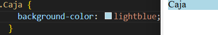

Nombre del atributo |
Descripcion |
Valores posibles |
Ejemplo de uso |
Imagen representativa |
Fuente de informacion |
| font-size |
especifica la dimensión de la letra |
puede tomar unidades absolutas como los pixeles, tambien unidades relativas como el porcentaje y puede tomar
palabras claves como small, medium, large, etc
|
- Unidades absolutas: font-size: 16px;
- Unidades relativas: font-size: 120%;
- Palabras clave: font-size: large;
|
|
font-size |
| border-radius |
redondea las esquinas del borde exterior de un elemento |
puede tomar unidades absolutas como los pixeles, tambien toma porcentajes, o tambien puedes modificar el tamaño
de cada esquina de manera individual, o definir una radio horizontal y vertical
|
- Unidades absolutas: border-radius: 10px;
- Valores Individuales (Cada esquina): border-radius: 10px 20px 30px 40px;
- Radios separados: border-radius: 50px/20px;
|
|
border-radius |
| display |
establece los tipos de visualizacion interna y externa de un elemento |
hay formas comunes que puede tomar el elemento como que sea visualice en bloque, tambien puede verse de una forma
avanzada para que se pueda visualizar en un celular adaptandose a la pantalla |
- Valores comunes: display: block;
- Valores para un diseño avanzado: display: flex;
|
|
display |
| flexbox |
un metodo que pueda ayudar a distribuir el espacio entre los items de una interfaz y mejorar las capacidades de alineacion |
depende de la propiedad que se utilice, ya sea para un contenedor, direccion de elementos o alinear los elementos a un eje |
- En un contenedor: display: flex;
- Para definir la direccion de los elementos: flex-direction: row;
- Para alinear los elementos en un eje principal: justify-content: center;
|
|
flexbox |
| position |
especifica como un elemento es posicionado en el documento |
se puede posicionar un elemento ya sea por defecto o especificar en que parte de la pagina quieres que se fije |
- Por defecto: position: static;
- Especificar posicion: position: relative;
- Permanecer fijo al desplazarse: position: fixed;
|
|
position |
| box-shadow |
añade efectos de sombra alrededor del marco de un elemento |
se puede modificar el tono, brillo, calidez de la sombras, ademas, puede desplazar esta misma |
- Generar una sombra: box-shadow: 5px 5px 10px 0px rgba(0, 0, 0, 0.5);
|
|
box-shadow |
| overflow |
especifica: si recortar contenido, dibujar barras de desplazamiento o mostrar el contenido excedente
en un elemento a nivel de bloque |
se puede ocultar las barras o que sean visibles, tambien que estas aparezcan si se excede el contenido |
- Por defecto: overflow: visible;
- Ocultar: overflow: hidden;
- Barras de desplazamiento: overflow: scroll;
|
 |
overflow |
| z-index |
indica el orden de un elemento posicionado y sus descendientes |
puede dejar que el orden venga por defecto o manejarlo con numeros positvos y negativos |
- Valores numericos positivos: z-index: 1;
- Valores numericos negativos: z-index: -1;
- Valor predeterminado: z-index: auto;
|
|
z-index |
| opacity |
define la transparencia de un elemento |
se puede tomar valores comunes para este atributo |
- Valores comunes: opacity: 1;
|
|
opacity |
| margin y padding |
margin establece el margen para los cuatro lados y padding establece el area de relleno en los cuatro lados de un
elemento a la vez |
margin y padding pueden tomar valores numericos ya sean unidades absolutas o relativas |
- margin: margin: 10px;
- padding: padding; 10px;
|
 |
margin y padding |
| background-color |
define el color de fondo de un elemento |
puede tomar palabras claves para definir el color o utilizar valores hexadecimales, RGB y HSL |
- Palabras clave: background-color: red;
- Valores Hexadecimales: background-color: #ff0000;
- Valores RGB: rgb(255, 0, 0);
|
 |
background-color |
| font-family |
define una lista de fuentes o familias de fuentes |
se usan las fuentes especificas, ademas, se puede usar una reserva si por si acaso esa fuente no esta disponible
y se puede usar fuentes personalizadas
|
- Fuente especifica: font-family: "Arial";
- Familias genericas: font-family: "Georgia", serif;
|
|
font-family |
| justify-content |
define como el navegador distribuye el espacio entre y alrededor de los items flex |
puede alinear los elementos al inicio o al final del eje principal, tambien los puedes centrar y distribuir
en espacios iguales
|
- Centrado: justify-content: center;
|
|
justify-content |
| text-decoration |
se usa para establecer el formato de texto a subrayado y suprarrayado, tachado o parpadeo |
puede utilizar valores comunes para eliminar o agregar una decoracion al texto como el subrayado, tamnien se
puede usar valores compuestos para agregar mas de una decoracion
|
- Valores comunes: text-decoration: overline;
- Valores compuestos: text-decoration: underline overline;
|
|
text-decoration |